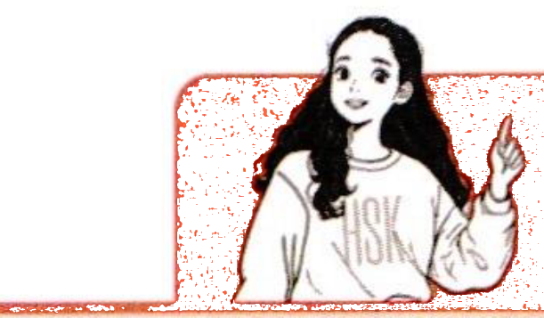

一、语音PronunciationПроизношение 7-1
1送气声母和不送气声母辨析Distinction Between Aspirated and Unaspirated InitialsРазличие между придыхательными и непридыхательными инициалями
送气声母和不送气声母是汉语语音的一大特色，送气声母和不送气声母都是成对的，共六组：“b和p、d和t、g和k、j和q、zh和ch、z和c”。A major feature of Chinese pronunciation is the distinction between aspirated and unaspirated initials. These two types of initials occur in pairs, forming a total of six groups: “b and p”, “d and t”, “g and k”, “j and q”, “zh and ch”, as well as “z and c”.Основная особенность китайского произношения — это различие между придыхательными и непридыхательными инициалями. Эти два типа инициалей встречаются парами, образуя всего шесть групп: «b и p», «d и t», «g и k», «j и q», «zh и ch», а также «z и c».
听录音，分辨送气声母和不送气声母，并大声朗读。Listen, distinguish between aspirated and unaspirated initials, then read aloud.Слушайте, различайте придыхательные и непридыхательные инициали, затем читайте вслух.
2前鼻音韵母和后鼻音韵母辨析Distinction Between Front Nasal and Back Nasal FinalsРазличие между передними и задними носовыми финалями
汉语中前鼻音韵母是指以“-n”结尾的韵母，后鼻音韵母是指以“-ng”结尾的韵母。In Chinese, front nasal finals refer to the finals ending in “-n”, while back nasal finals refer to those ending in “-ng”.В китайском языке передние носовые финали — это финали, оканчивающиеся на «-n», а задние носовые финали — на «-ng».
039